本章学习目标（Objectives）
- 掌握正交投影与"以光源视角渲染深度图"；
- 理解投影纹理坐标（projective texturing）；
- 实现阴影贴图：深度比较 + 深度偏移（bias）+ PCF 软阴影；
- 知道阴影马赫带、Peter-Panning 等伪影及其对策。
第 11 章的平面阴影只能投在平面上。阴影贴图（Shadow Map）是真实游戏的标准做法：任何表面上都能落影。
20.1 渲染场景深度（Rendering Scene Depth）
把相机放在光源处看场景：第一遍 pass 只输出深度（到光源的距离）到"阴影贴图"（DepthStencilBuffer）。之后主 pass 里，任一像素若"到光源的距离"比阴影图记录的"最近者"更远，说明它被挡在光后 → 在阴影里。本质：从光源看的可见性问题。
20.2 正交投影（Orthographic Projections）
平行光（太阳）没有透视收缩，用正交投影：视锥是轴对齐盒子，投影线平行。正交投影矩阵把盒子的 x∈[−l,r]、y∈[−b,t]、z∈[n,f] 映射到 [−1,1]。深度 z/w 用于比较。
20.3 投影纹理坐标（Projective Texture Coordinates）
主 pass 里要"问阴影图"：先把像素投影到光源的投影窗口求 uv（像投影仪打幻灯片）。做法：用光源的视-正交矩阵变换到齐次裁剪空间 → 透视除法 → [0,1] 映射（uv×0.5+0.5）→ 用 uv 采样阴影图、z 与记录深度比较。深度图里的深度还要经过深度映射 g(z) 的逆变换后再比（书里给出推导）。
20.4 阴影贴图（Shadow Mapping）
完整流程：
- Pass 1（建阴影图）：把场景渲染到阴影贴图（只渲染到深度缓冲；用 PSO 阻止颜色写，或干脆渲染到 offscreen）。
- Pass 2（用阴影图）：主渲染里按 20.3 求得 uv/z，比较：
shadow = z > depth + bias ? inShadow : lit，阴影处只吃环境光。 - 伪影一：条纹（Shadow Acne）——分辨率有限，同一表面被自身深度"误判"遮挡，明暗条纹。对策：深度偏移（bias），沿法线/深度方向抬一点；斜面要更大偏移（slope-scaled bias）。
- 伪影二：Peter-Panning——bias 过大阴影"脱离"物体底座。对策：只对背面渲染阴影图（cull front faces），减小 bias。
20.5 大 PCF 核（Large PCF Kernels）
单次采样让阴影边缘有"楼梯"锯齿。PCF（百分比渐近过滤）：对阴影图取 2×2/4×4 个点分别比较再平均，边缘变成柔和渐变（书中 2D 图前后对比非常明显）。大核开销高，书中还介绍随机旋转核 + 分辨率提高的方案。
本章小结
- 阴影 = 从光源看的遮挡：深度图 + 主 pass 深度比较。
- 平行光用正交投影；投影纹理坐标求"像素在阴影图中的位置"。
- bias 治条纹（过大 → Peter-Panning），渲染背面到阴影图是经典搭配。
- PCF 让阴影边缘柔和。
🖼️ 原书插图（17 张，点击展开）
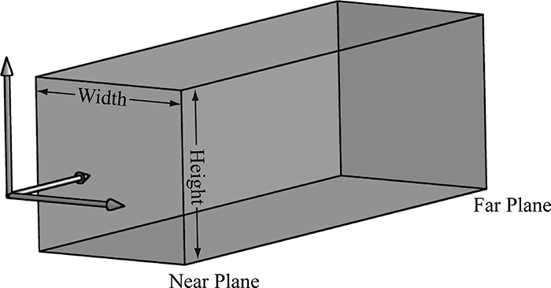
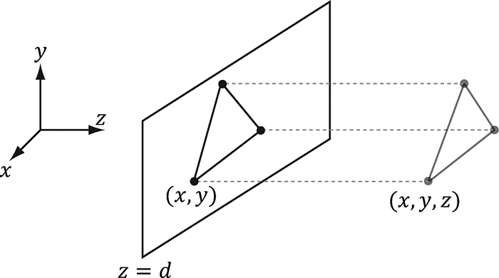
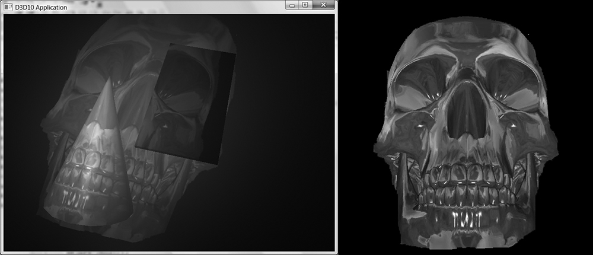
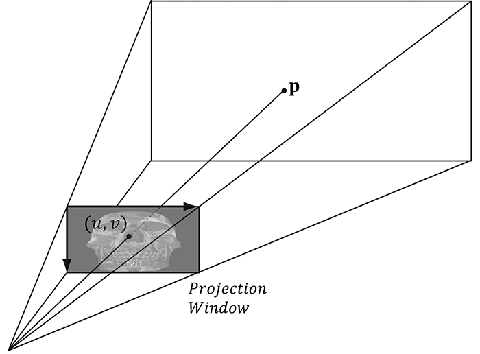
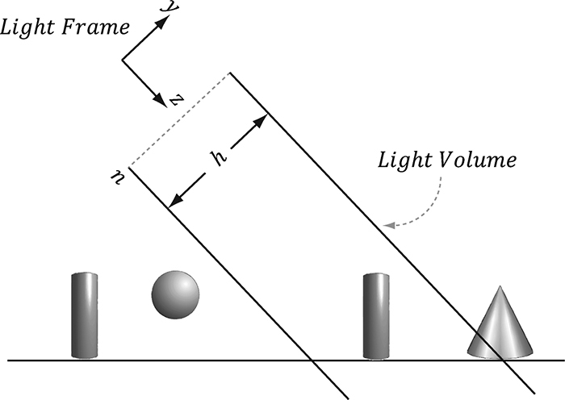
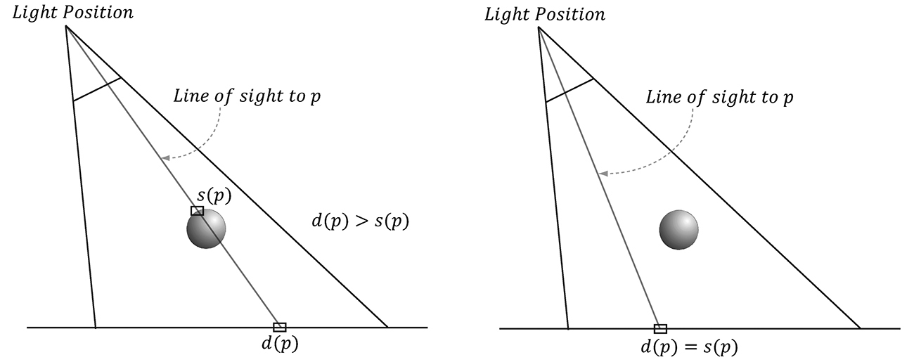
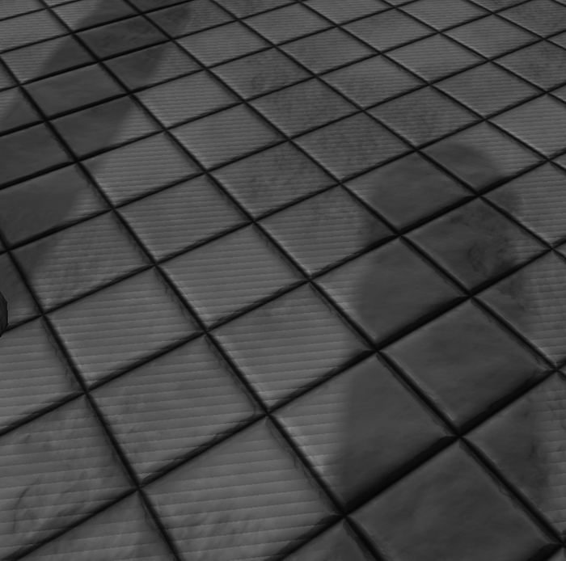
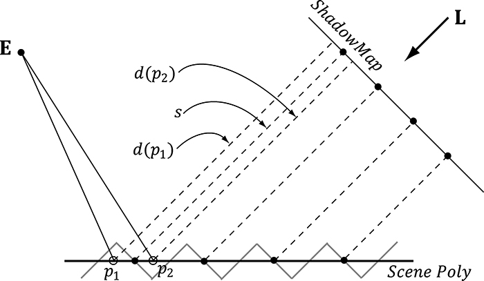
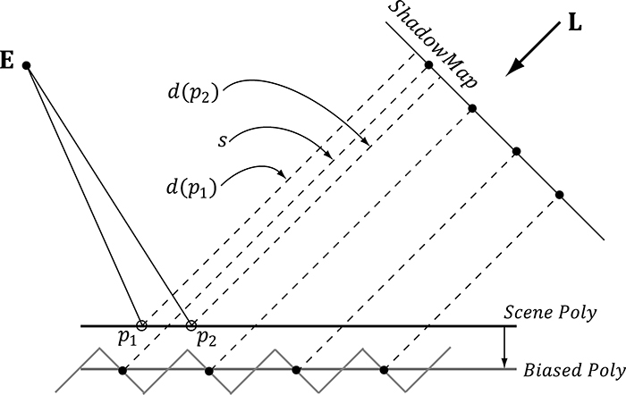
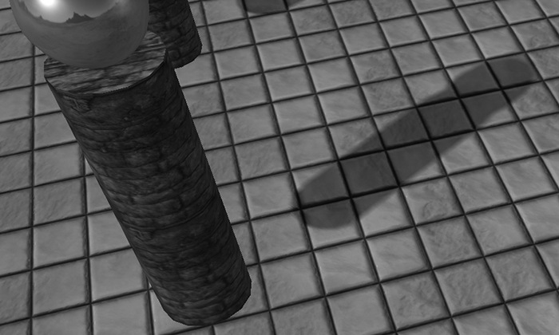
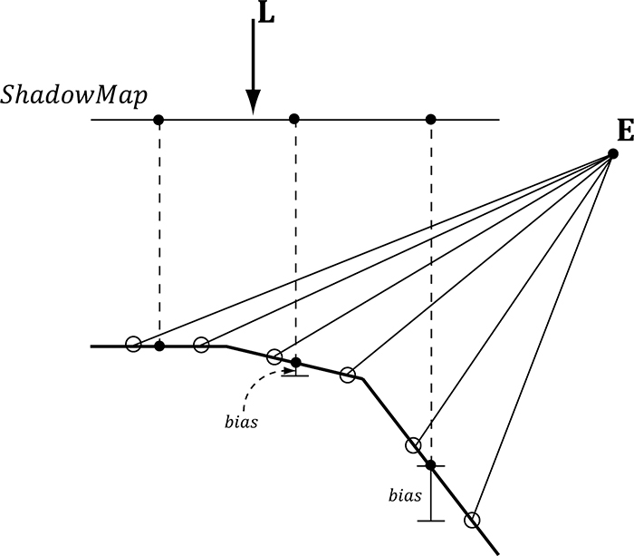
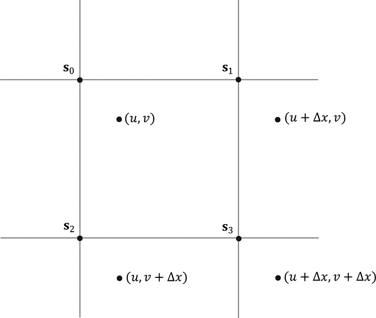
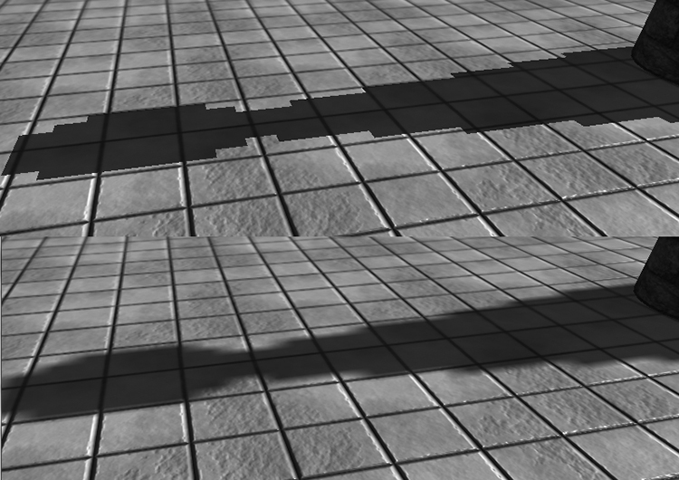
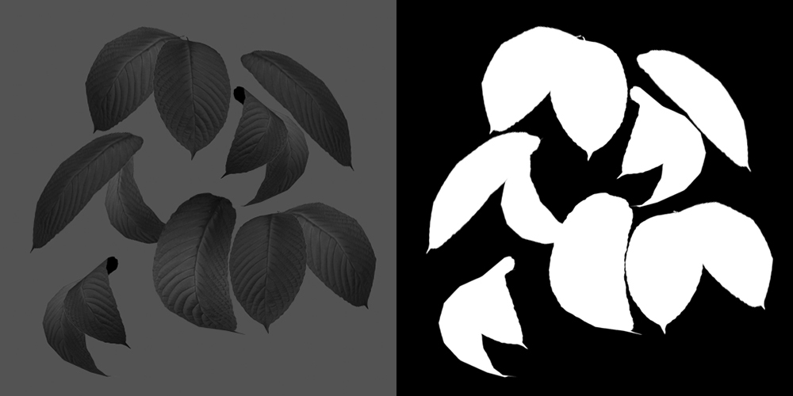
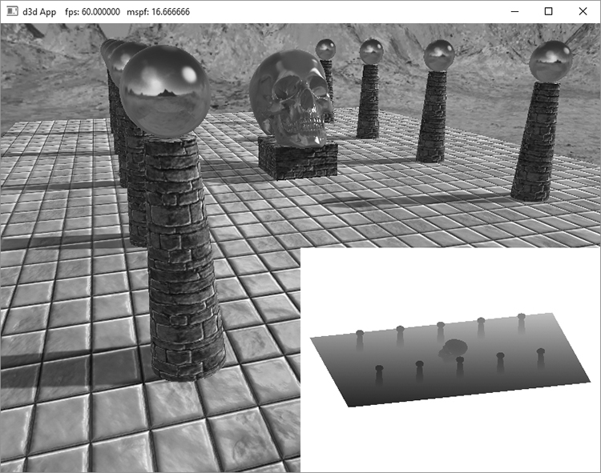
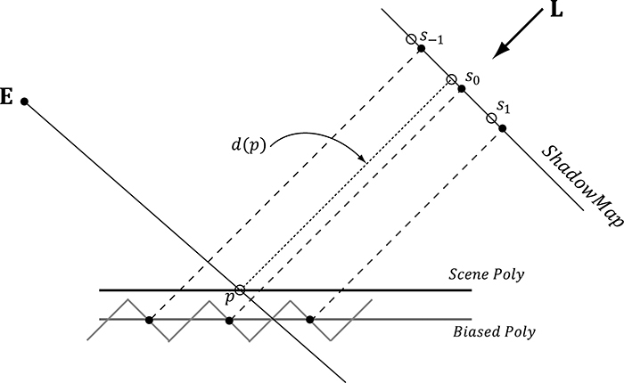
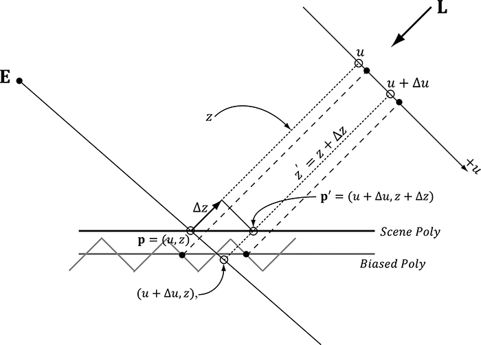